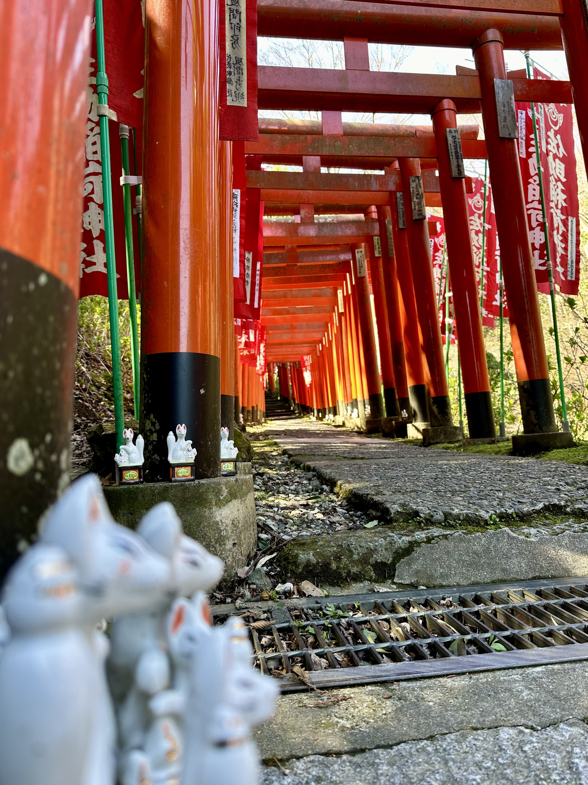
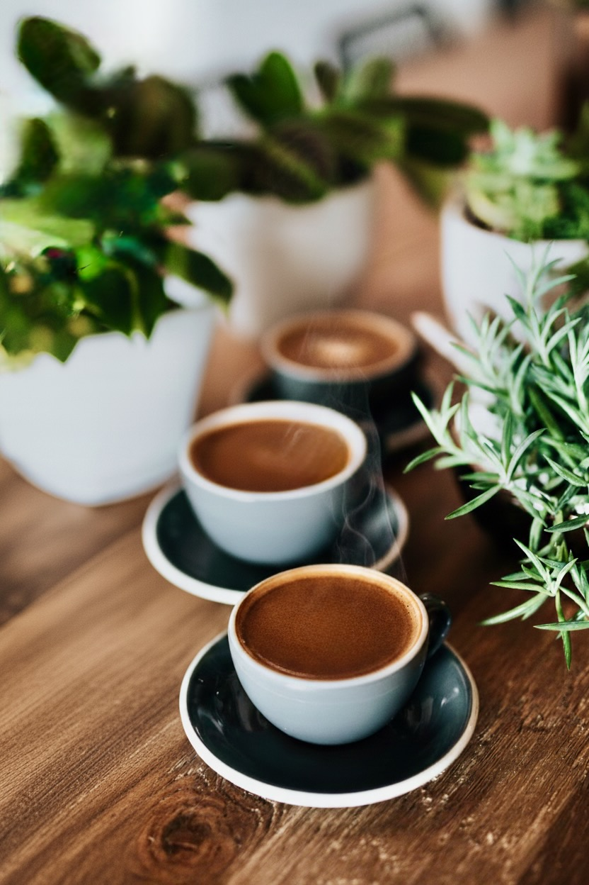
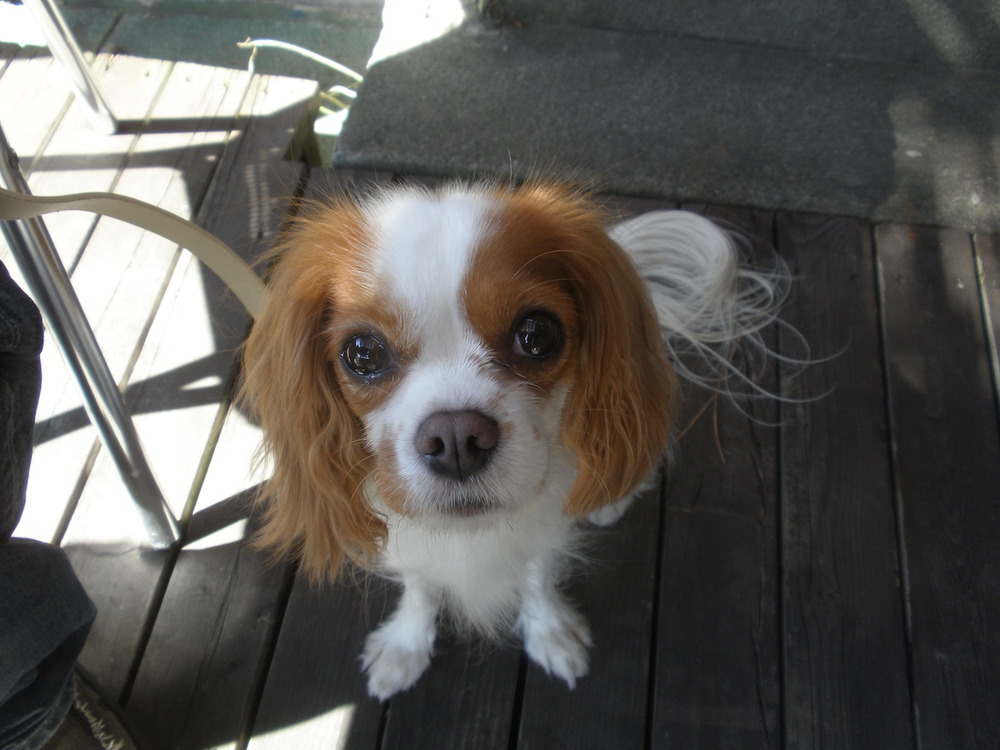

Morning
朝の静けさとともに、焼きたてのパンとおいしいコーヒーを。
鎌倉・佐助のほんわかカフェ。散策の合間に一息どうぞ。

使用しているのは 堀口珈琲。信頼する焙煎士が仕上げる豆を、毎日の抽出に合わせてセレクトしています。
浅すぎず深すぎない中深煎りを中心に、香りとボディの調和を探し続けています。産地が持つキャラクターを慈しむように、焙煎から抽出まで丁寧に。
さあ、ここから。素敵な毎日が始まりますように、いつでも佐助でお待ちしています。

朝の静けさとともに、焼きたてのパンとおいしいコーヒーを。

鎌倉散策の途中でテラス席へ。ワンちゃんもご一緒にどうぞ。
旅の余韻を語る夕暮れ時。軽くビールはいかがでしょう。
コーヒーのこと、鎌倉の季節だより、スタッフの好きなものを綴っています。
Livedoor Blog鎌倉駅西口を出て銭洗弁天方面へ徒歩10分。佐助の静かな谷戸にあるカフェです。